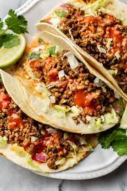

Back to Home
Beef Tacos

Description:
These tacos are the perfect lunch/dinner idea for anybody in a quick pinch, all you need
is some tortillas, ground beef, seasonings, and whatever toppings you wish and you're good to go!
Makes 12 tacos
Taco Ingredients:
- 1 lb. ground beef
- 1/2 teaspoon paprika
- 1/2 teaspoon garlic powder
- 1/4 teaspoon cayenne powder
- 1 teaspoon salt
- 1 teaspoon black pepper
- 1/2 teaspoon cumin
- Optional: 1/8 teaspoon chili powder
Suggested Topping Choices:
- Sour Cream
- Guacamole
- Shredded lettuce
- Pico de Gallo
- Mango Salsa
- Shredded Cheese
- In a large bowl, combine beef with spices. Mix until thoroughly combined.
- TUrn stove to medium heat. Saute beef until it is orange/brown colored, then remove from heat.
- While the beef is cooking, warm up a tortilla by putting it in a hot pan for about 30 seconds
- Assemble tacos by putting ground beef on tortillas and whatever toppings you'd like
- ENJOY!